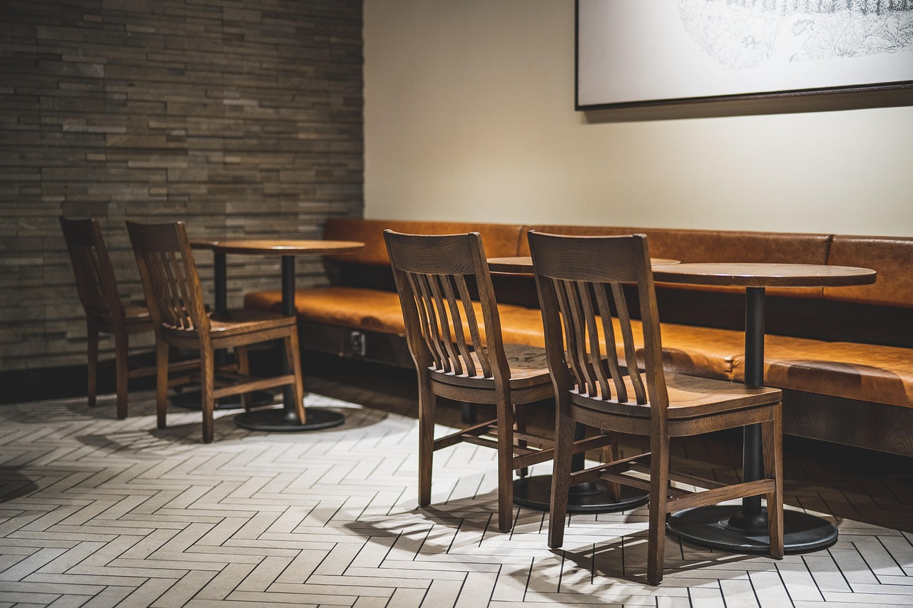

Présentation de l’entreprise
« Vite & Gourmand » est un restaurant traiteur situé à Bordeaux et fondé il y a 25 ans par Julie et José. L’entreprise propose une cuisine gourmande et de qualité pour tous types d’événements, des repas festifs comme Noël ou Pâques aux occasions plus simples. Grâce à des menus en constante évolution, « Vite & Gourmand » s’adapte aux saisons et aux envies de sa clientèle, tout en conservant un savoir-faire authentique et une passion pour la bonne cuisine.
